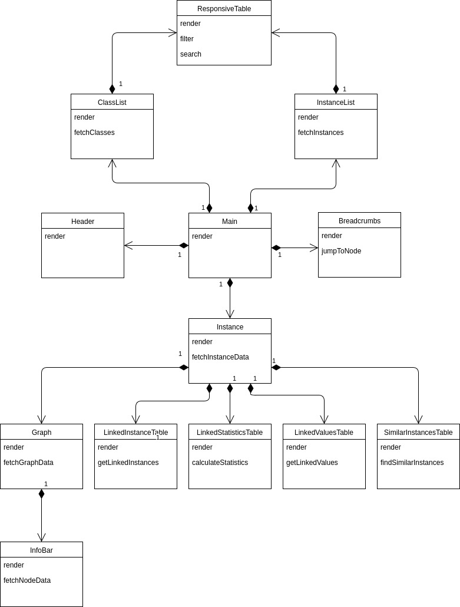

Design Patterns
Adapter
Implementing our data visualisation was one of the hardest tasks on the project.
This is because of the difficutly in getting D3.js (data visualisation
library we were using) to work with React. D3.js works by creating a lot of
DOM nodes for the graph and then doing calculations to place the nodes at
the right place. But, React uses a virtual DOM to render components. Thus, D3.js
can't really move elements on the DOM if the DOM doesn't exist.
So we had to write an Adapter to make D3.js work in React and successfully implement
our data visualisation. We dug into the React source code to find some methods that
the we needed and then we wrote our Graph Component. We used an adapter in between
the D3.js which we put in the Graph component. The way the adapter worked was
by first letting the entire React rendring process to complete and then after
running the D3.js code from inside our Graph component.
This worked perfectly and our data visualisation works flawlessly because of this.
Dependency Injection
Dependency Injection helps implement Inversion of Control. React allows us to use dependency injection by passing props to a component. We use it extensively through out app expecially in all our filtering tables. Instead of having to fetch the data by calling the API again and again, we make the parent components pass the data about instances (the dependency) to the child component throught props. Even in our Graph component, instead of having to call the API to update the component information, we just pass it the updated information from the Instance component which has already fetched the updated information.
Command
The render() method in React is synonymous to the execute() method in the Command pattern.
Every React Component has a render() method and that's the only method which is required for
a method to be displayed on the DOM.
This is used internally in React everywhere. So whenever the props of a component change, it knows
it only needs to call the render() method to update the component on the page. This powerful
abstraction also allows the component to be changed easily as the calling function only
needs to know to call the render() method (which every component has) without needing
to know anything else about the calling component.
Observer
The observer pattern is used extensively in React where the props of an object are
passed around.
One place where this happens is when the props of a child component change, not only does
the child component re-render but also the parent components reder method is called again.
We use this feature extensively, especially in our Graph component for the datavisualisation.
When ever the current viewing instance changes, the graph method automatically re-renders to show
the visualisation for the new instance. The signal to re render the graph component comes from
the change in its props where the original JSON containing the nodes and links is replance with new
JSON which has nodes and links for the new instance.
Decorator Design Pattern
React has a feature called called Higher order components. You can write a function
which takes in a React component and returns a new React component with some new
functionalities and props attached to it.
This is very useful as it gives us control over what props we need to pass to the
component which is being decorated. We use this in our Main component to make it
comply with React Router and handle our Routing mechanism. We also use this to
implement advace filtering capabilities in our filtering table.
Component Based Architecture
React can easily be called held responsible for ending the use of MVC on the
front-end. We make heavy use of components in React.
Component = Views + Event Handling + UI State
So each component manages its own state and event handling, thus, obviating
the need for MVC and providing a much better separation of concerns.
Architecture
Class Diagram
At first glance it seems that our architecture makes heavy use of composition. But, it is only because it is highly recommened in React (our design framework) and is also considered a good practise. We have also explained below why React Favours Composition over Inheritance. We have done our best to adhere to industy standards which designing the system and we believe we succeeded as the application works flawlessly even when we load tested it.
Description of Classes
React: Composition vs Inheritance
As React has a very powerful composition model, Facebook (creators of React) recommend to use Composition over Inheritance to reuse code between components.
In our project we had two similar list views as two different components (InstanceList and ClassList). There was a lot of similar code in both the components as both were basically just list view showing different items. We initially thought of creating a abstract class for a List View but after reading the React documentation and recommendations we decided to go for composition over inheritance. 'Favour composition over inheritance' is also a design principle in Head First Design Patterns book.
So we used a separate Table component which had all the necessary code for the list view and then added this table component in both of our list views. Hence, avoiding duplication and promoting code reuse.
References
https://facebook.github.io/react/docs/composition-vs-inheritance.html
Head First Design Patterns
Development: Workflow
Git Branching Model
We followed a really successfull git branching model. Whenever one of us
was working on a feature for the GUI, we would create a separate branch to work on it
and would them make a pull request when we thought the feature was ready.
Also, our pull requests cannot be merged without a review, so one other team member
would then check the new branch and then approve the changes to be merged into our
master branch. Below is a screenshot of one of our pull requests being inspected.
The video below aims to show the network visualisation of our branching model. You can clearly see the different features branches being merged into the master branch
Milestones
We tried to incrementally move forward while developing the GUI. Now we aim to show you how the development actually progressed and videos of the GUI at each stage.
Milestone 1: Visualisation and Replicate Stardog
As you can see in the video above, we implemented a data visualisation to show all connected instances and values.
Pull Requests:
Implemented Stardog (Anirudh)
Created the basic version of the GUI by replicating the Stardog interface.
Basic Visualisation (Anirudh)
Started the visulisation made in D3.js
Breadcrumbs (Anirudh)
Initial version of our navigation system
Pagination (Aksel)
Started paginating the list view
Milestone 2: Search Grouping and Instance View
We added search for instances and classes and also tried to group nodes in the visualisation according to properties. We also did some load testing in which helped us figure that our search implemenation was breaking when we simulated a million instances. We took note of this and in the next milestone corrected it by changing our implementation to be able to handle a million connected nodes.
Pull Requests:
Basic grouping (Anirudh)
Grouping the results if they belonged to the same class or were connected using the same properties.
Search (Aksel)
Added search functionality to find instances/classes.
Showing Links (Anirudh)
Links to connected instances/values.
Load Testing (Anirudh)
Created a load testing script.
Milestone 3: Theme Filtering and Advance Search
We changed our search implementation so that it work really fast even when there are millions of rows of data. We also styled our GUI and added some advanced filtering mechanisms. We also improved the page showing details of an instance (instance view) to show all linked instances and values in table which allows the user to filter them.
Pull Requests:
Re-Engineered Search (Anirudh)
Redesinged our search functionality.
Instance View Tables (Anirudh)
Added an amazing table which allows the user to filter and search through the connected instances and values.
Theme for GUI (Anirudh)
Added a nice theme to our GUI to make it look great.
Filtering (Anirudh)
Improved the filtering capabilities of our GUI.